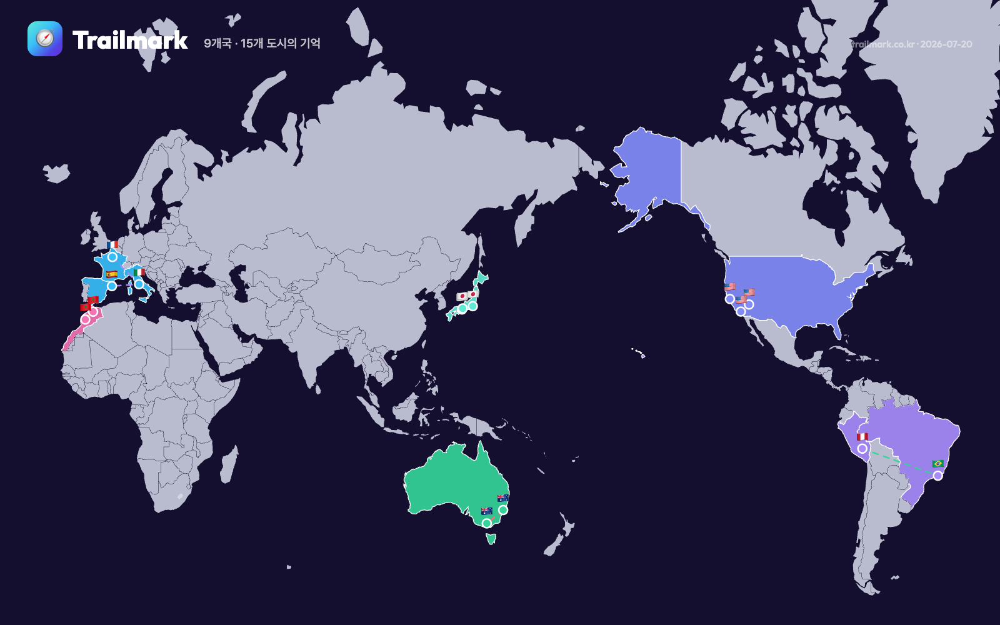
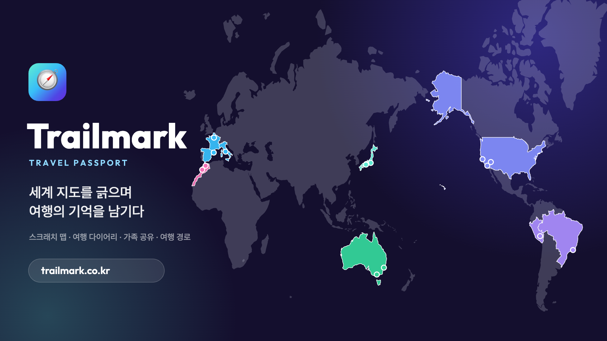

세계 지도를 긁으며 여행의 기억을 남기다
AI 공장장 부트캠프 3기 · 개인 프로젝트 v1 · 송수용
→ 여행을 사랑하지만 그 기록이 자꾸 사라져 아쉬운 나 자신을 위한 앱

은박/컬러 스크래치 뷰와 OSM 실사 지도를 한 번에 전환. 국경 모양 그대로 hover 하이라이트.
지도에서 나라를 클릭하고 자연어로 도시 검색(Nominatim). 고른 도시는 도시 DB에 캐시되어 다음엔 즉시 검색.
도시별 글·사진 기록, 나중에 수정 가능. 인스타 게시글 링크를 붙이면 지도에서 바로 임베드.
한 여행의 여러 도시를 그룹으로. 사이드바·경로 패널이 여행별 섹션으로 정리되고 색이 자동 배정.
방문일 순 경로 라인 + 순번 배지. 드래그로 순서 편집이 그룹 안에서 가능.
버튼 하나로 내 지도 전체를 캔버스로 렌더해 공유용 PNG 다운로드.
이메일로 초대하면 서로의 지도를 보기 전용으로 열람. 실제 다른 수강생의 초대를 받아 검증됨.
내 나라=인디고, 친구 나라=코랄, 같이 간 나라=사선 스트라이프(SVG 패턴)로 한눈에.
아시아 3/48, 유럽 3/44… 대륙별 국가 수 기준 진행 바 + 세계 정복 %.
Supabase Auth + RLS로 본인/공유자만 접근. 타 사용자·비로그인 0건 조회를 SQL로 직접 검증.
모바일은 지도 상단 + 기록 하단 시트. 터치 기기에선 hover 버튼 상시 노출, iOS 확대 방지.
Edge Function 프록시 + 캐시 구조 완성. API 키만 넣으면 동작 — Enterprise SKU 비용 검토 후 보류.
→ 서울에서 LA로 가는 경로가 태평양을 건너는 자연스러운 선이 됐다
index.html 단 한 파일 — React 18(UMD) + Tailwind CDN + Leaflet 1.9. 지도 데이터는 world GeoJSON(무료·키 불필요).
Supabase — Auth(이메일) · Postgres 테이블 6개 + RLS 정책 전수 검증 · Storage(사진) · Edge Function(평점 프록시).
OSM Nominatim 자연어 검색(한글 지원) + 도시/행정구역 우선 랭킹 + tm_cities 캐시로 반복 호출 제거.
Vercel + 가비아 도메인 trailmark.co.kr (A/CNAME + SSL). OG 카드·파비콘까지 캔버스로 직접 생성.

"기능 1개를 끝까지"라는 원칙대로 스크래치 맵이라는 코어 경험을 끝까지 다듬었다. 태평양 중심 지도 같은 어려운 문제를 피하지 않고 풀었고, 실제 도메인 배포에 다른 수강생의 공유 초대까지 받아 실사용 검증이 됐다.
구글 평점은 비용 구조(Enterprise SKU) 때문에 구조만 만들고 키 연결을 미뤘다. 도시 검색이 Nominatim 무료 API 의존이라 랜드마크 검색 품질이 들쭉날쭉한 것, 소셜 로그인이 버튼만 준비된 것도 v2 숙제.
지금 바로 써볼 수 있습니다
감사합니다 — 송수용